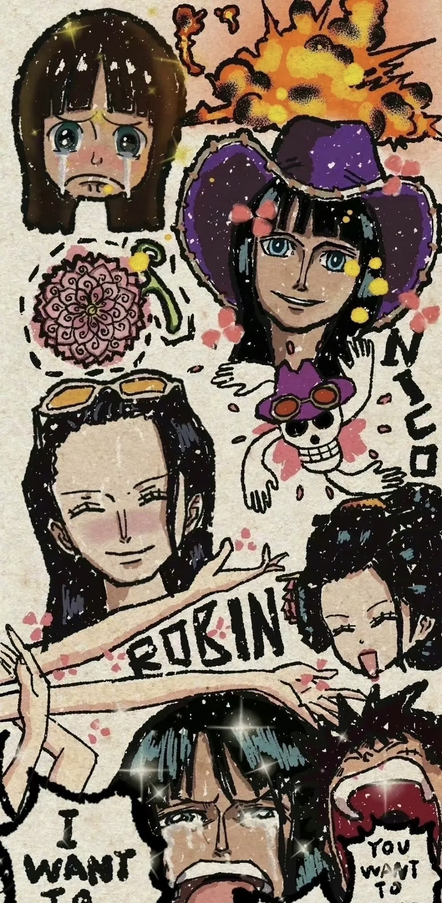
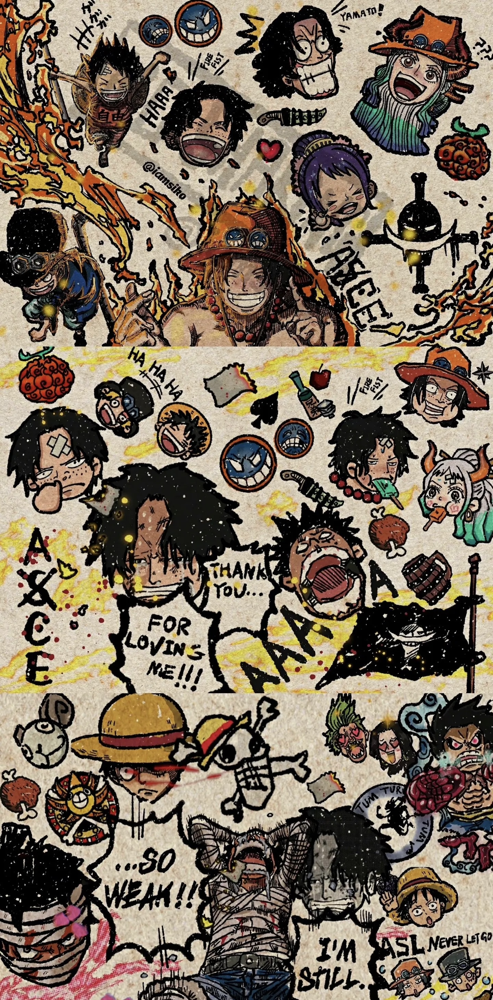

Straw Hat Pirates
In One Piece, Luffy's Straw Hat Pirates is a team of ten distinct members, each with their own unique dreams and abilities, who embark on a great adventure together. Monkey D. Luffy: Captain of the Straw Hat Pirates, determined to become the Pirate King. He is the user of the Rubber Fruit, possesses powerful Conqueror Haki, Armament Haki and Observation Haki, and is good at physical skills. When Luffy sailed in the East China Sea, he successively recruited Zoro, Nami, Usopp and Sanji, becoming the core of the team.
About other members
Roronoa Zoro: A fighter of the Straw Hat Pirates, who dreams of becoming the world's best swordsman. He is a swordsman from the East China Sea, uses three swords to fight, and possesses Armament Haki and Observation Haki. After meeting Luffy, Zoro became Luffy's first partner, and provided solid combat support for the team with his powerful swordsmanship.
Nami: A navigator of the Straw Hat Pirates, nicknamed "Little Thief Cat". She is good at using weather sticks combined with meteorological science to fight, and her dream is to map the world. Nami is responsible for navigation in the team, and with her precise navigation skills and keen perception of the weather, she ensures the smooth sailing of the team.
Nico Robin: An archaeologist of the Straw Hat Pirates, nicknamed "Devil's Child". She is a person who has eaten the Flower-Flower Fruit, and her dream is to find the blank 100 years of history. Robin is in charge of archaeological affairs in the team, and with her archaeological knowledge and ability, she has solved many historical mysteries for the team.
Franky: A shipwright of the Straw Hat Pirates, nicknamed "Iron Man". He fights with a modified body and homemade weapons, and his dream is to travel around the world on a dream ship he built. Franky is responsible for the modification and construction of ships, and with his superb skills, he provides the team with powerful combat equipment. 